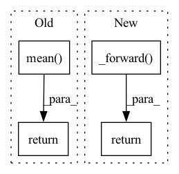

Pattern ID :38351
Before Change
if loss_hard.numel() < n_min:
loss_hard, _ = loss.topk(n_min)
return torch.mean( loss_hard)
class Dice(nn.Module):
def __init__(self, delta: float = 0.5):After Change
def forward(self, preds, labels: Tensor) -> Tensor:
if isinstance(preds, list):
return sum([w * self._forward(pred, labels) for (pred, w) in zip(preds, self.aux_weights)])
return self._forward( preds, labels)
class Dice(nn.Module):
def __init__(self, delta: float = 0.5, aux_weights: list = [1, 0.4]):In pattern: SUPERPATTERN
Frequency: 3
Non-data size: 4
Instances Fragment ID: 109621000
Project Name: sithu31296/semantic-segmentation
Commit Name: b68900992fb24dd5166b2b34e3d35d19493d747d
Time: 2021-08-21
Author: sithu31296@gmail.com
File Name: utils/losses.py
M Class Name: OhemCrossEntropy
N Class Name: OhemCrossEntropy
M Method Name: forward(3)
N Method Name: forward(3)
M Parent Class: nn.Module
N Parent Class: nn.Module
M File Name: utils/losses.py
N File Name: utils/losses.py
M Start Line: 25
M End Line: 37
N Start Line: 46
N End Line: 49
Before Change
// adjust loss to account for number of classes
dice_score = dice_score / targets.shape[1]
return dice_score.mean()
__all__ = ["ce", "ohemce", "dice"]After Change
def forward(self, preds, targets: Tensor) -> Tensor:
if isinstance(preds, list):
return sum([w * self._forward( pred, targets) for (pred, w) in zip(preds, self.aux_weights)])
return self._forward(preds, targets)
Fragment ID: 109621002
Project Name: sithu31296/semantic-segmentation
Commit Name: b68900992fb24dd5166b2b34e3d35d19493d747d
Time: 2021-08-21
Author: sithu31296@gmail.com
File Name: utils/losses.py
M Class Name: Dice
N Class Name: Dice
M Method Name: forward(3)
N Method Name: forward(3)
M Parent Class: nn.Module
N Parent Class: nn.Module
M File Name: utils/losses.py
N File Name: utils/losses.py
M Start Line: 48
M End Line: 62
N Start Line: 77
N End Line: 80
Before Change
batch_size, seq_len, vocab_size = logits.shape
loss = self.loss_fct(logits.view(-1, logits.size(-1)), labels.view(-1))
loss = loss.view(batch_size, -1).sum(dim=-1) //TODO support more objectives
loss = loss.mean()
return loss
def generate(self, batch: Union[Dict, InputFeatures], **generation_kwargs):After Change
if self.in_generation_function:
return self.prompt_model.model.forward(*args, **kwargs)
else:
return self._forward( *args, **kwargs)
def _forward(self, batch: Union[Dict, InputFeatures]) -> torch.Tensor:
r
This is the forward method of the training of generation in prompt-learning framework. Fragment ID: 109620999
Project Name: thunlp/openprompt
Commit Name: 3b447c9d4ffc817086ffe4504fa97a844fc60c48
Time: 2021-10-11
Author: shengdinghu@gmail.com
File Name: openprompt/pipeline_base.py
M Class Name: PromptForGeneration
N Class Name: PromptForGeneration
M Method Name: forward(1)
N Method Name: forward(2)
M Parent Class: nn.Module,GenerationMixin
N Parent Class: nn.Module,GenerationMixin
M File Name: openprompt/pipeline_base.py
N File Name: openprompt/pipeline_base.py
M Start Line: 363
M End Line: 380
N Start Line: 361
N End Line: 375